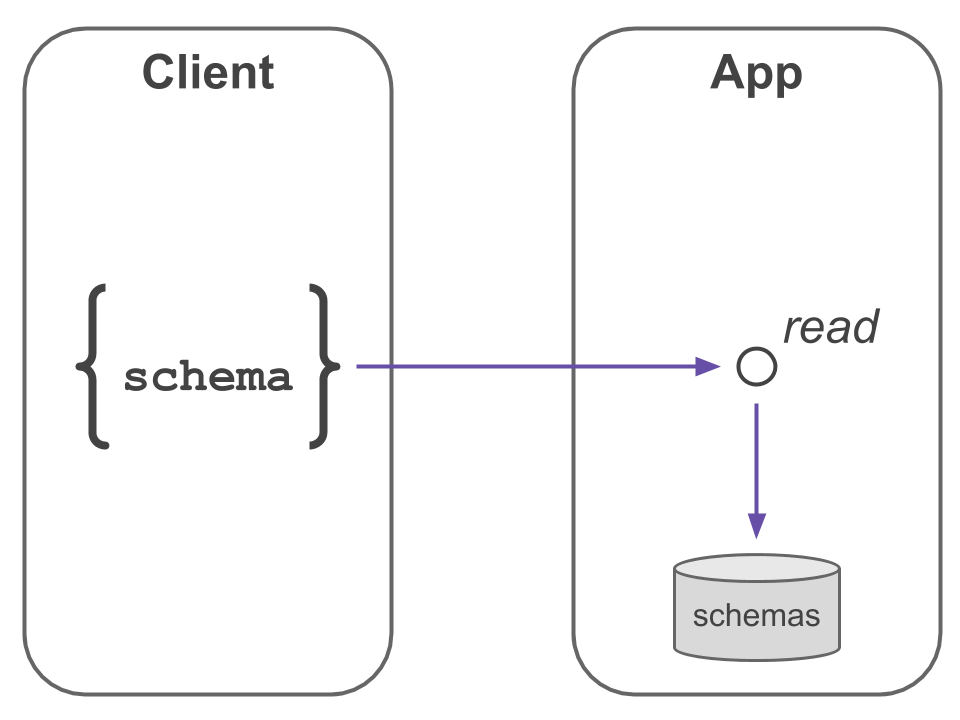
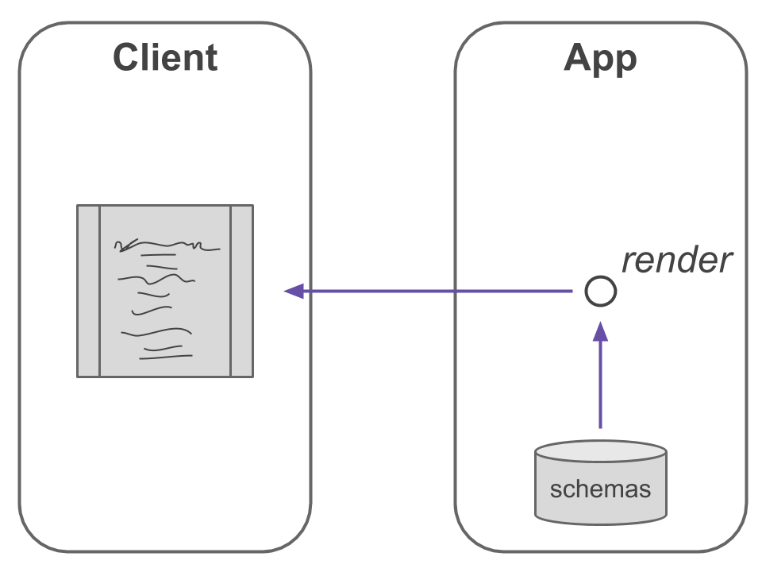
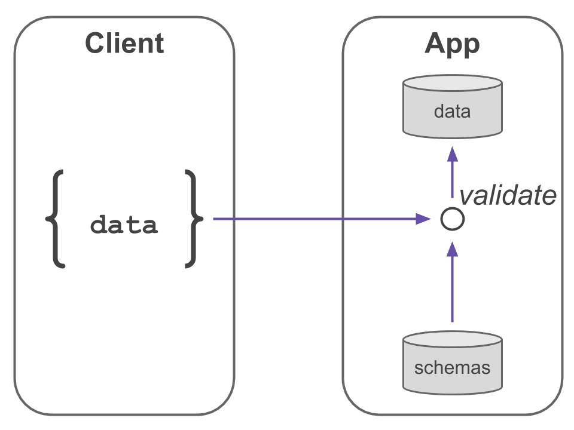
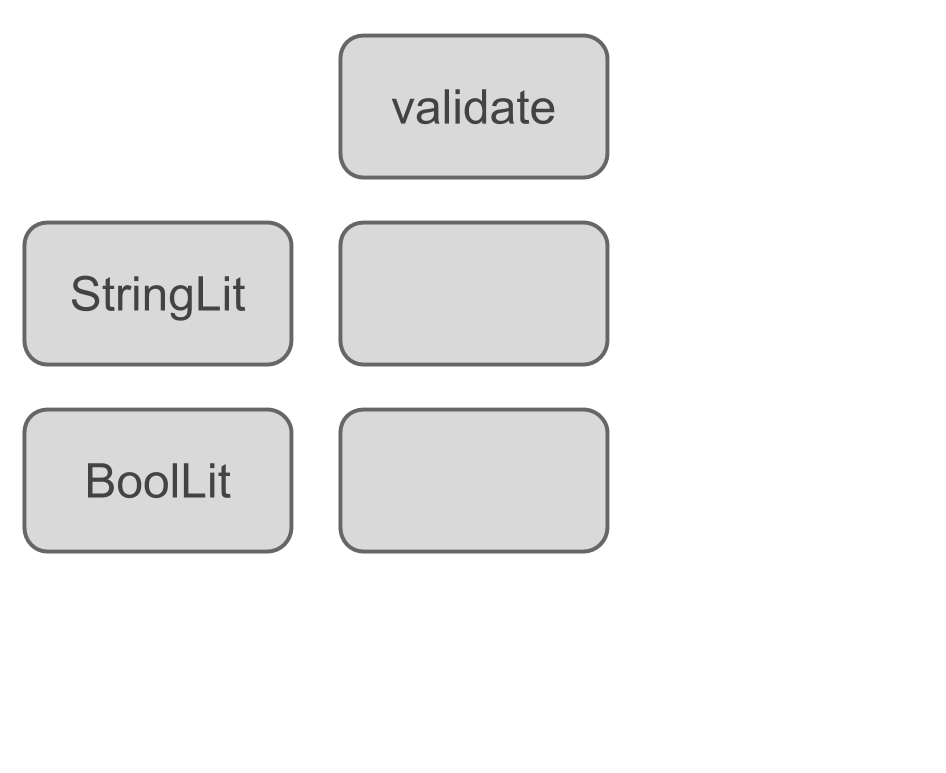
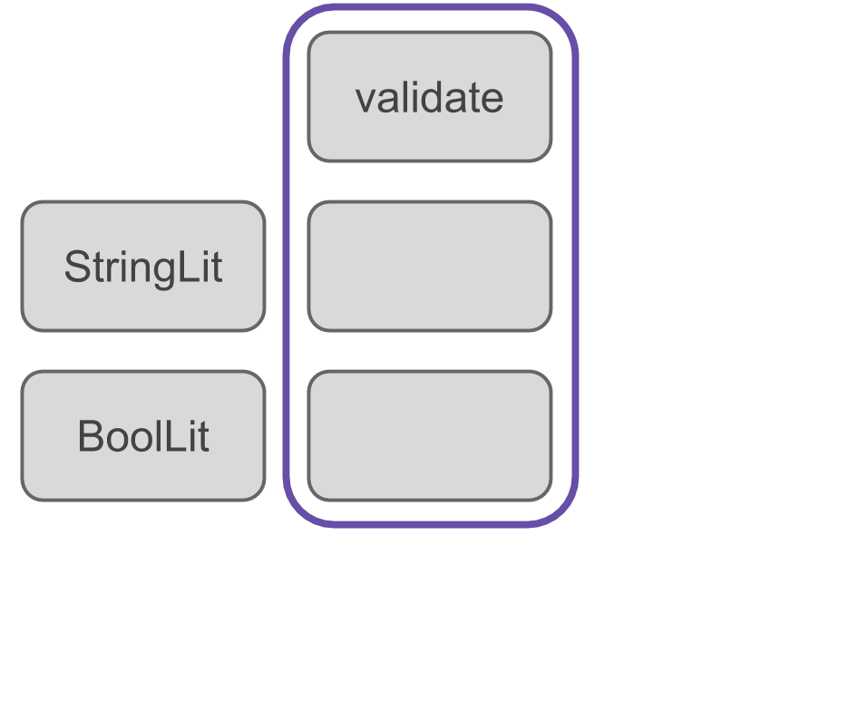
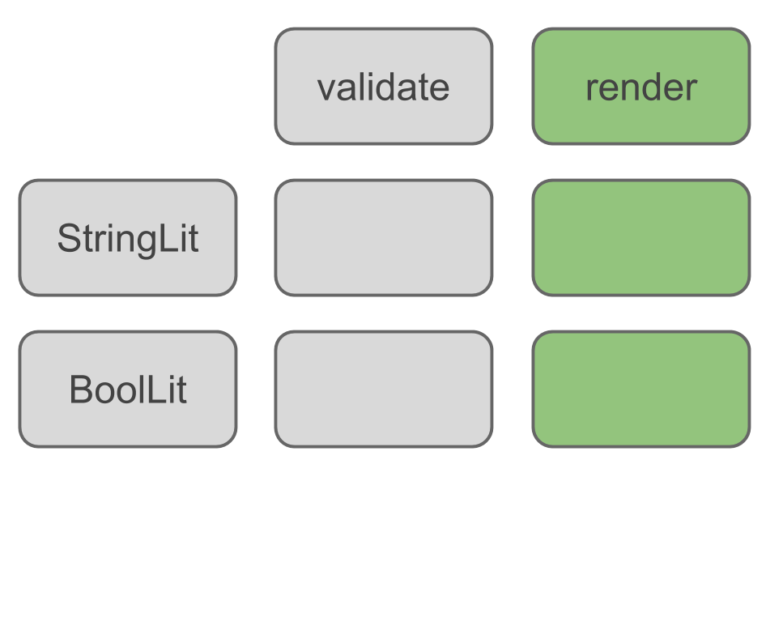
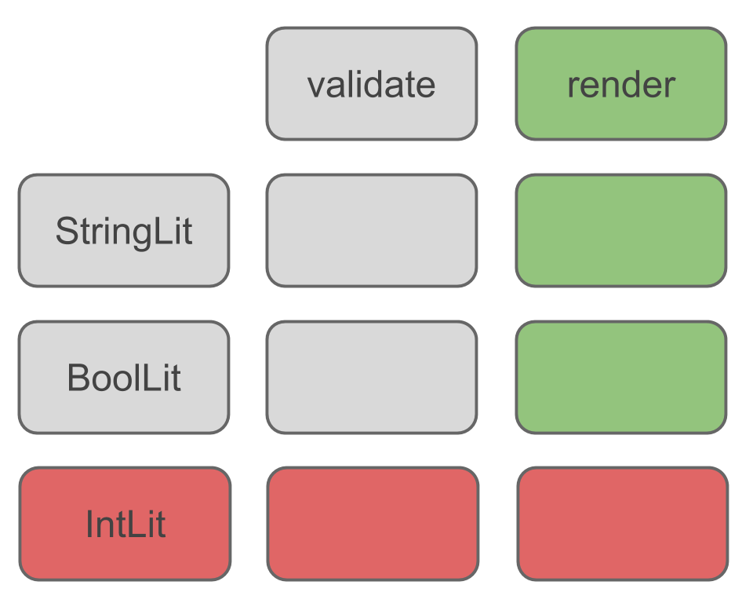
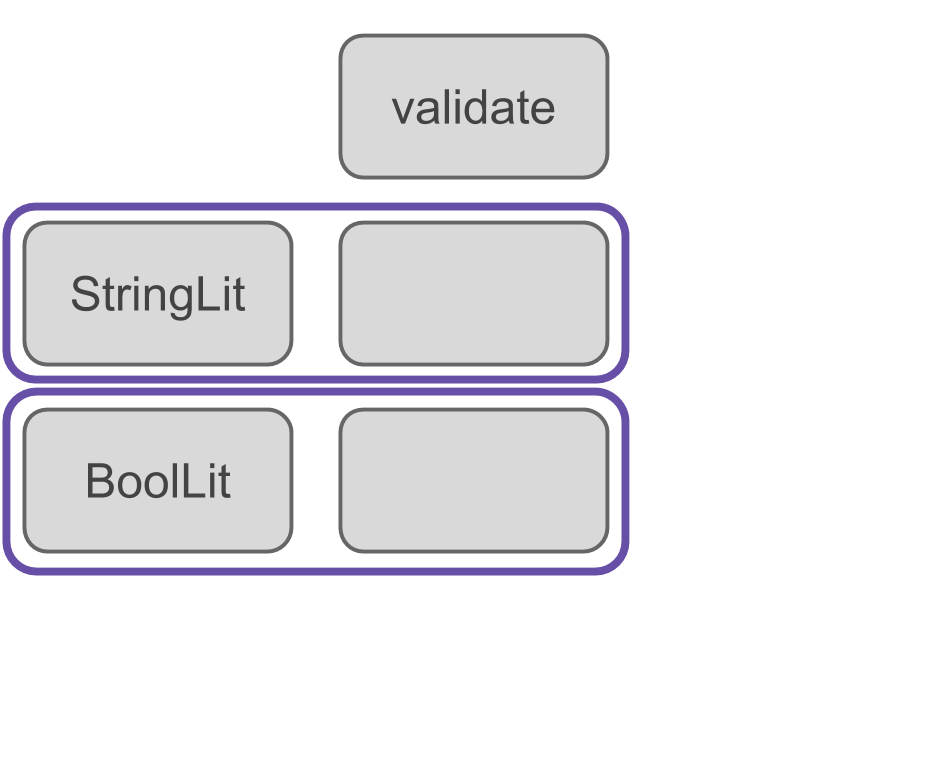
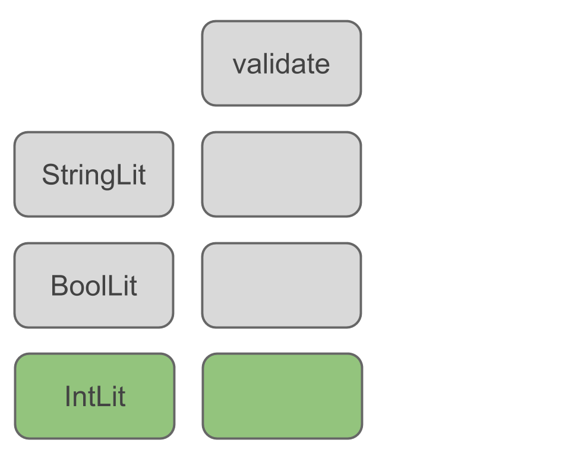
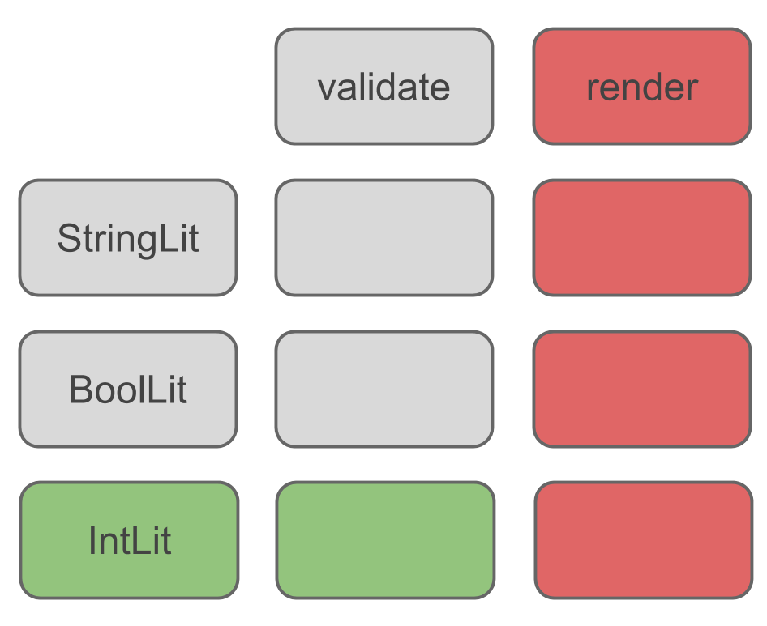

class: center, middle # Real-World Use of a Tagless Encoding ### Jonas Michel --- # Promises * We're going to keep things *practical* * This will *will not* be a smear campaign -- ### .center[This is *the* tool to solve *every* problem] --- class: center, middle # *The* tool to solve *THE WORLD* --- # Promises * We're going to keep things *practical* * This will *will not* be a smear campaign ### .center[~~This is *the* tool to solve *every* problem~~] ### .center[This is *a* tool that can be used to solve *a class of* problems] --- # Use Case: Ad Hoc Data Specs .center[] --- # Use Case: Ad Hoc Data Specs .center[] --- # Use Case: Ad Hoc Validation .center[] --- # (Typed) DSL Interpreters A typed DSL encoding whose expressions define an algebra ```tut:silent sealed trait Grammar[A] case class StringLit(value: String) extends Grammar[String] case class BoolLit(value: Boolean) extends Grammar[Boolean] // ... ``` -- **Task:** Create interpreters of our algebra * render * validate -- **Goals:** * composability -- * static type safety * no modification / duplication of existing code * extensibility: grammar types & interpreter variants --- class: center, middle # Hey, this sounds familiar... --- # Expression Problem > “The goal is to define a data type by cases, where one can add new cases to > the data type and new functions over the data type, without recompiling > existing code, and while retaining static type safety.” > > — Phil Wadler, an email he sent in 1998 to the java-genericity list --- # Decomposition .center[] --- # Decomposition: Functional .center[] --- # Decomposition: Functional .center[] --- # Decomposition: Functional .center[] --- # Decomposition: Object-Oriented .center[] --- # Decomposition: Object-Oriented .center[] --- # Decomposition: Object-Oriented .center[] --- # A Possible Solution - GADTs **Grammar:** ```tut:silent sealed trait Grammar[A] case class StringLit(value: String) extends Grammar[String] case class BoolLit(value: Boolean) extends Grammar[Boolean] // ... ``` -- **Interpreters:** *render* ```scala Grammar[A] => String ``` *validate* ```scala Grammar[A] => Boolean ``` -- **Parser:** ```scala String => Grammar[A] // HINT: applicative ``` --- # A Technical Wall (in Scala) * Generalized algebraic data types (GADTs) are broken in Scala * Poor pattern matching / type refinement support when it comes to existential types -- ```tut:silent trait Op[A, B] case class SomeOp[A]() extends Op[A, A] ``` -- ```tut:silent:fail def eval[A](a : A, op: Op[A, Int]) : A = op match { case SomeOp() => 1 + a } ``` --- # A Technical Wall (in Scala) ```tut:silent trait Op[A, B] case class SomeOp[A]() extends Op[A, A] ``` ```tut:fail def eval[A](a : A, op: Op[A, Int]) : A = op match { case SomeOp() => 1 + a } ``` --- # Opportunities * ### Hide the types, work with them later. -- * ### Weave applicative syntax into both the *grammar* and *interpreters*. -- > ### DSLs for *free!* -- * With GADTs, accomplished using *FreeAp* -- * An alternative: *tagless encoding* * Terms expressed as *functions* from our algebra to a result * No runtime tags * DSL and applicative syntax fall from the construction --- class: center, middle # Let's do it! --- # DSL Grammar #### GADT ```tut:silent sealed trait Grammar[A] case class StringLit(value: String) extends Grammar[String] case class BoolLit(value: Int) extends Grammar[Int] ``` --- # DSL Grammar #### Tagless ```tut:silent case class FieldName(value: String) extends AnyVal ``` -- ```tut:silent import scalaz._ // E[_]: E[T] for some {type T} trait Grammar[E[_]] { // a schema comprises fields def schema[F[_] : Foldable](es: F[E[_]]): E[_] // a field has a name and type def field[A](name: FieldName, grammar: E[A]): E[A] // our types def bool: E[Boolean] def string: E[String] } ``` -- ```tut:silent object Grammar { @inline def apply[E[_]](implicit r: Grammar[E]): Grammar[E] = r } ``` --- # Render Interpreter (support) ```tut:silent case class SchemaDoc(value: String) extends AnyVal ``` ```tut:silent type Render[A] = Const[Maybe[SchemaDoc], A] ``` > A constant function lets us paramterize on `A`, but always get a `SchemaDoc`. -- ```tut:silent implicit val semigroup: Semigroup[SchemaDoc] = new Semigroup[SchemaDoc] { def append(r1: SchemaDoc, r2: => SchemaDoc) = SchemaDoc(s"${r1.value}\n${r2.value}") } ``` > A semigroup lets us smash `SchemaDoc`s together. --- # Render Interpreter ```tut:silent import scalaz.Maybe.{Empty, Just} import scalaz.syntax.all._ implicit val grammarRender: Grammar[Render] = new Grammar[Render] { // aha, some applicative syntax assistance def schema[F[_] : Foldable](es: F[Render[_]]): Render[_] = es.foldLeft(().point[Render]) { (acc, e) => acc <* e } // append away, thank you semigroup instance def field[A](name: FieldName, grammar: Render[A]) = new Const[Maybe[SchemaDoc], A]( SchemaDoc(s"[name]: ${name.value}").just) |+| grammar def bool = renderType("boolean") def string = renderType("string") def renderType[A](`type`: String): Render[A] = new Const[Maybe[SchemaDoc], A](SchemaDoc(s"[type]: ${`type`}").just) } ``` --- # Render Some Bits ```tut:silent def creatureSchema[E[_]: Grammar : Apply]: E[(String, Boolean)] = { val interp = Grammar[E] import interp._ val creature = FieldName("creature") val vertebrate = FieldName("vertebrate") (field(creature, string) |@| field(vertebrate, bool)) { (s: String, b: Boolean) => (s, b) } } ``` -- ```tut creatureSchema[Render].getConst.getOrElse(SchemaDoc("")).value ``` --- # Validate Interpreter (support) [Argonaut](http://argonaut.io/) is a natural choice for JSON parsing in a scalaz ecosystem. ```tut:silent import argonaut._, Argonaut._ // DecodeJson apply: HCursor => DecodeResult[A] // Kleisli[M[_], A, B]: A => M[B] type JsonReader[A] = Kleisli[DecodeResult, HCursor, A] ``` -- ```tut:silent import scalaz.Isomorphism._ def isoFunctor = new IsoFunctorTemplate[DecodeJson, JsonReader] { // DecodeJson ~> JsonReader def to[A](dj: DecodeJson[A]): JsonReader[A] = dj.kleisli // DecodeJson <~ JsonReader def from[A](jr: JsonReader[A]): DecodeJson[A] = DecodeJson(jr.run) } ``` -- ```tut:silent implicit val monad: Monad[DecodeJson] = new IsomorphismMonad[DecodeJson, JsonReader] { def G: Monad[JsonReader] = Monad[JsonReader] def iso: DecodeJson <~> JsonReader = isoFunctor } ``` --- # Validate Interpreter ```tut:silent implicit val grammarDecodeJsons: Grammar[DecodeJson] = new Grammar[DecodeJson] { // same as before, that's pretty cool def schema[F[_] : Foldable](es: F[DecodeJson[_]]): DecodeJson[_] = es.foldLeft(().point[DecodeJson]) { (acc, e) => acc <* e } // get the json element at the field name and decode it def field[A](name: FieldName, decode: DecodeJson[A]) = DecodeJson { _ --\ name.value as decode } def bool = implicitly[DecodeJson[Boolean]] def string = implicitly[DecodeJson[String]] } ``` --- # Validate Some Bits (The same `creatureSchema` we defined earlier.) ```tut:silent def creatureSchema[E[_]: Grammar : Apply]: E[(String, Boolean)] = { val interp = Grammar[E] import interp._ val creature = FieldName("creature") val vertebrate = FieldName("vertebrate") (field(creature, string) |@| field(vertebrate, bool)) { (s: String, b: Boolean) => (s, b) } } ``` -- ```tut:silent val jellyfish = """{ "creature": "jellyfish", "vertebrate": false }""" ``` -- ```tut println(Parse.decode(jellyfish)(creatureSchema[DecodeJson])) ``` --- # Validate Some Bits ```tut:silent def validateCreature(c: String): String \/ Unit = Parse.decode(c)(creatureSchema[DecodeJson]).fold({ case -\/(msg) => msg.left[Unit] case \/-((msg, history)) => (msg + " " + history).left[Unit] }, _ => ().right[String]) ``` --- # Validate Some Bits ```tut:silent val gallimimus = """{ "kreecher": "gallimimus", "vertebrate": true }""" ``` -- ```tut validateCreature(gallimimus) ``` -- ```tut:silent val politician = """{ "creature": "politician", "vertebrate": "sometimes" }""" ``` -- ```tut validateCreature(politician) ``` --- # Reality Check At this point, we have interpreters to... * **render** a schema as a string * **validate** a datum with respect to a schema .center[ ] --- # Reality Check To satisfy our use case, we need a mechanism to parse a schema over the wire *into* our grammar. .center[] Our parser will have three layers: *types* > *fields* > *schema* --- # Schema Parser: Data Types We're going to use [FastParse](https://www.lihaoyi.com/fastparse/) to create a `String => DecodeJson[E[_]]` parser. -- ```tut:silent import fastparse.all._ import fastparse.core.Parsed def parseType[E[_] : Grammar : Functor] (history: CursorHistory)(typeStr: String): DecodeResult[E[Unit]] = { val interp = Grammar[E] import interp._ // we don't need to generate a data structure, just ensure it can be parsed def unit[A](ea: E[A]): E[Unit] = ea map Function.const(()) // parsers for each of our grammar's types val boolp: P[E[Unit]] = P("boolean").map(_ => unit(bool)) val stringp: P[E[Unit]] = P("string").map(_ => unit(string)) // this is an "either" parser def typep: P[E[Unit]] = P(boolp | stringp) typep.parse(typeStr) match { case Parsed.Success(parsed, _) => DecodeResult.ok(parsed) case f: Parsed.Failure => DecodeResult.fail(f.msg, history) } } ``` --- # Schema Parser: Fields ```tut:silent // recall the shape of a DecodeJson apply: // HCursor => DecodeResult[A] def fieldDecodeJson[E[_] : Grammar : Apply]: DecodeJson[E[_]] = { val interp = Grammar[E] import interp._ DecodeJson { c => for { fname <- (c --\ "name").as[String] map { FieldName(_) } ftype <- (c --\ "type").as[String] >>= { parseType[E](c.history)(_) } } yield field(fname, ftype) } } ``` --- # Schema Parser ```tut:silent def schemaDecodeJson[E[_] : Grammar : Apply]: DecodeJson[E[_]] = { val interp = Grammar[E] import interp._ // an empty schema isn't much use, now, is it? DecodeJson.NonEmptyListDecodeJson(fieldDecodeJson[E]) map { schema(_) } } ``` --- # Parse Some Schemas ```tut:silent val jCreatureSchema = """ |[ | { "name": "creature", "type": "string" }, | { "name": "vertebrate", "type": "boolean"} |] """.stripMargin ``` -- Can we *render* it? ```tut:silent def schemaRender = Parse.decode(jCreatureSchema)(schemaDecodeJson[Render]) ``` -- ```tut schemaRender.map { schema => schema.getConst.getOrElse(SchemaDoc("")).value } ``` --- # Parse Some Schemas ```tut:silent val jCreatureSchema = """ |[ | { "name": "creature", "type": "string" }, | { "name": "vertebrate", "type": "boolean"} |] """.stripMargin ``` -- Can we *validate* with it? ```tut:silent val schemaValidate = Parse.decode(jCreatureSchema)(schemaDecodeJson[DecodeJson]) ``` -- ```tut:silent def validate(c: String)(s: DecodeJson[_]): String \/ Unit = Parse.decode(c)(s).fold({ case -\/(msg) => msg.left[Unit] case \/-((msg, history)) => (msg + " " + history).left[Unit] }, _ => ().right[String]) ``` --- # Parse Some Schemas ```tut:silent val jCreatureSchema = """ |[ | { "name": "creature", "type": "string" }, | { "name": "vertebrate", "type": "boolean"} |] """.stripMargin ``` Can we *validate* with it? ```tut:silent val schemaValidate = Parse.decode(jCreatureSchema)(schemaDecodeJson[DecodeJson]) ``` ```tut schemaValidate.map { schema => println( validate(jellyfish)(schema) ) // valid println( validate(gallimimus)(schema) ) // invalid println( validate(politician)(schema) ) // invalid } ``` --- # Grammar Extensions #### We set out to solve the expression problem. Did we...? -- New *operations* over our DSL can be added with *interpreters*. -- New *types* within our DSL can be added by *extending* the grammar. ```tut:silent trait NumGrammar[E[_]] extends Grammar[E] { def int: E[Int] def double: E[Double] } ``` --- # Takeaways * *"Advanced"* techniques in the real world! * GADTs have limited support in Scala * For GADTs, there's *FreeAp* * Otherwise, we can use a *tagless encoding* * **Bonus:** Applicative syntax woven into a DSL * We solved the expression problem along the way -- <br /> .center[**Bigger picture:** It can pay off to play into a functional ecosystem] --- # Open Question ### Do our interpreters compose? -- Suppose we have... * an interpreter `Grammar[A]` * a natural transformation `A ~> B` Can we compose them to get a `Grammar[B]`? -- Or is it as bad as... * Create a `Grammar[B]` that takes a `Grammar[A]` * `Grammar[B]` delegates to `Grammar[A]` converting from `A` to `B` --- # Resources [Alternatives to GADTs in Scala]( https://pchiusano.github.io/2014-05-20/scala-gadts.html), Paul Chiusano [Scrap your type classes]( http://www.haskellforall.com/2012/05/scrap-your-type-classes.html), Gabriel Gonzalez [Typed Tagless Final Interpreters]( http://okmij.org/ftp/tagless-final/course/lecture.pdf), Oleg Kiselyov [From Object Algebras to Finally Tagless Interpreters]( https://oleksandrmanzyuk.wordpress.com/2014/06/18/from-object-algebras-to-finally-tagless-interpreters-2/), Oleksandr Manzyuk <br /> This presentation is powered by: * Rob Norris' [tut](https://github.com/tpolecat/tut) SBT plugin (all code is compiler-checked) * [remark.js](http://remarkjs.com/) <br /> .center[https://github.com/jonasrmichel/jonasrmichel-presentations]